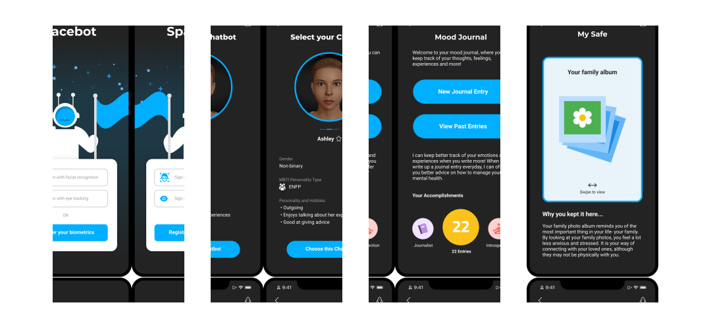
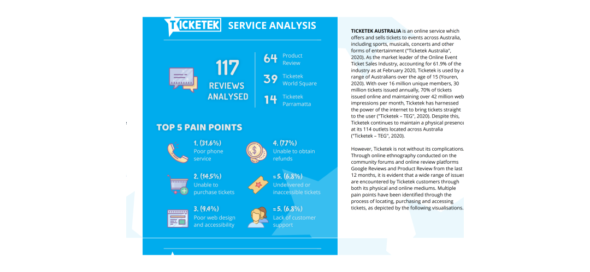

Other Works
COILLD
The BlueChilli Smart Waste Virtual Hackathon, presented by the City of Canterbury Bankstown, invited hackathon teams to present solutions for managing waste, increasing sustainability and improving the waste service customer experience.
I worked within a team of six individuals from interdisciplinary backgrounds to design COILLD- an app that educates residents from Canterbury Bankstown council about waste policies so that they can effectively manage their waste.
To view the winning pitch, click on the image below:

Spacebot: AI Chatbot
Emerging technologies, government-funded space programs and the efforts of private companies in travelling to outer space has brought humanity closer to travelling to Mars than ever before. As such, the potential exists for the tourism industry to send humans to the Red Planet in the near future. In light of this, there was an opportunity to design a user interface that enhances the experience of travelling to Mars while addressing the mental health concerns of travelling to space.
As part of this university project, I worked in a team of three to design an application that can be used to manage one's mental health and wellbeing in space. See the prototype below:
Ticketek Service Analysis
As Australia's leading ticket retailer, Ticketek is the go-to website for people looking to purchase tickets to their favourite events. However, the company is plagued by a range of complications which make for a frustrating user experience.
To better understand the existing user experience and pain points of the brand, I carried out a service analysis for the company. As part of this case study, I conducted research to determine the key pain points faced by Ticketek customers, which may be used to redesign the Ticketek service and user experience in future.
